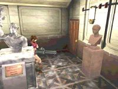
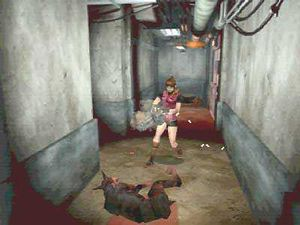
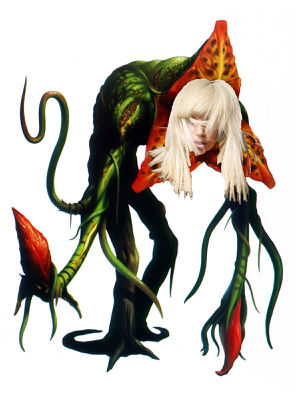

Resident Evil 2
 De: La Frikipedia, la enciclopedia extremadamente seria.
De: La Frikipedia, la enciclopedia extremadamente seria.
De la serie Videojuegos:
Resident Evil 2

Resident Evil 2, el ojo de la hermandad.
| Desarrollado por:
|
Capbrón.
|
| Distribuido por:
|
La Frikipedia para sus usuarios.
|
| Diseñado por:
|
Akimemira Eltobito.
|
| Motor
|
0 píxeles por un microsegundo.
|
| Género(s)
|
Survaivor Horror
|
| Fecha de lanzamiento:
|
En la época del Playstation, donde todos eramos felices.
|
| Modos de juego:
|
Con pistola y demás armas para sobrevivir.
|
| Requisitos:
|
Tener las bolas de acero y ser ocioso.
|
| Disponible en:
|
Internet y algunas copias físicas en Raccoon City.
|
| Formatos:
|
.doc y .mp3.
|
| Edades:
|
De 1 a 99 años, si es que no te matan.
|
| Puntuaciones:
|
9/10 (se queda pegado en algunas partes)
|
Sobreviviste a la mansión, ahora debes sobrevivir a la orgía infección de la ciudad.
«¡Al fin!, pensé que no encontraría de la verde»
~ Tú emocionado al encontrar una hierba verde para curarte.
«¡Yo con ganas de tomarme unas cervezas y toca matar zombis!»
~ Leon enojado por su fiesta de bienvenida.
«¿Claire?, ¿Claire?, ¿¡¡¡¡CLAIRE!!!!?»
~ Sherry con ganas de comerse un chocolate.
«¿Leon?, ¿Leon?, ¿¡¡¡¡LEON!!!!?»
~ Ada teniendo un orgasmo.
«Vamos a crear otra secuela, no pienso dejar esta mina de oro aquí.»
~ Shinji Mikami declarando a la prensa japonesa.
Resident Evil 2 (バイオハザード２ Biohazard 2, en CHINO! japonés y Rruezirent Ivol tú, en naco) es la secuela de la primera parte de Residente Malo, del género Capbrón para sus fans que pedían a gritos y latigazos otra secuela. Originalmente fue publicado para el PlayStation en 1998 pero luego se decidió subirlo a internet para piratearlo más fácilmente. Después de que recaudaran millones de Gringolares hicieron unas cuantas versiones para PC, Nientenido 64 y otras consolas baratas.
Es el segundo episodio de la saga Resident Evil, en este caso se nos cuenta la historia de Leon (léase Líon, porque la lía mucho) y Claire (léase Cler porque te estoy enseñando inglés), quienes van de paseo por ciudad Mapache, situada en el oeste de España. Pero su paseo resulta ser una mierda, debido a una huelga de recogedores de basura que comieron carne infectada del virus G-ay, la ciudad es todo un estropicio de basura y coches en llamas, para más jodedera, los habitantes de la ciudad mapache se encuentran infectados por que los recoge basuras y las ratas se encargaron de coger moder a todas las personas. Ahora un extraño virus se ha adueñado de la ciudad, Líon y Cler son separados de sus caminos y como única esperanza deciden encontrarse en una prostíbulo estación de frikis.
Historia
Claire Redfield
Claire se encuentra muy sola en su cuarto alquilado viendo su álbum de fotos familiares, recordando los viejos tiempos con su jotito hermanito Chris Redfield, así que ella ya cansada del trabajito de prostituta que tenía decide ir a visitar a su hermano y buscar un buen trabajo que la mantenga y no la degrade. Claire roba una motocicleta y se lleva un cuchillo de carnicero por si acaso, su viaje hacia Raccoon City dura 2 horas, cansada decide parar y entrar a un McDonalds y pedir un Whopper típico del Burger King, pero como todos estaban infectados y borrachos ella decide correr antes de que sea violada, Leon la salva de la violación disparándole en toda la cabeza al zombie, ambos corren a un carro de policía para salir de ahí, Claire nota que Leon es pervertido al leer un file que sobre él diciendo que se follaría a una pelirroja, Claire le reclama porqué le mintió y León al responderle se asoma un zombie por detrás del carro asustándolos y haciendo que se estrellaran para colmo un zombie drogado maneja un camión de gasolina obligándolos a salir rápidamente del auto.
Claire y Leon se encuentran separados, así que deciden encontrarse en la estación de policías de la ciudad Mapache para tener más protección, Claire se encuentra sola con su cuchillo de 40cm y una pistola con suficiente munición que consiguió en las calles de la ciudad pero lo que ella no sabe es que varios zombies le dan la bienvenida mostrando sus ensangrentados dientes.
 No te confíes de las estatuas, también están infectadas.
La joven Claire aceptó ir a la comisaría porque ahí trabajaba su hermano, así que después de darse un paseo por las calles de la ciudad Mapache y matar tres docenas de zombies llega a la comisaría notando que todas las puertas (inclusos las del baño) se encuentran cerradas con llaves de simbolitos. Claire decepcionada sube las escaleras para ir a la oficina de su hermano y se encuentra con una niña que está a punto de ser violada devorada por un zombie, la niña se escapa y ella entra a la oficina y lee un artículo de la frikipedia de que su hermano se fue a la mierda... o a otra ciudad.
d.En el transcurso del juego, Claire deberá salvar a la niña que se le escapó, ofreciéndole protección como lo hacía Michael Jackson. Finalmente logra atrapar a la mocosa y la interroga. Después de eso Claire y Leon deciden escapar por un trén que se encuentra en las instalaciones de Paragüas.
Antes de despedirse de sus compañeros los zombis, los lickers y los demás monstruos que te hicieron la vida imposible en este juego. Te tienes que enfrentar a una plasta de residuos estomacales que come personas. Claire toma una bazooka le apunta y le dispara 2 veces (si fallas un tiro el tipo te folla) explotando porquerías por todos lados. Finalmente Claire y su pandilla escapan de la ciudad siendo felicides por siempre.
Leon Scott Kennedy
León después de ser despedido como fotógrafo de Spiderman lee el periódico para ver que trabajo encuentra, lee la sección de clasificados y ve un artículo frikipedico muy importante donde se buscaba a un policía nocturno que cuidara las calles de ciudad mapache, Leon interesado llama y es contratado. Así que decide alistarse para irse a su nuevo trabajo, toma su tráiler y se marcha, el viaje dura más de 5 horas y decide detenerse para tomar aire fresco, nota que unos habitantes de ciudad Mapache le dicen “Arghhhhhhhhh” y otro le dice “Mmmmmmmmmmhhh”, pero como León sabe el lenguaje inciclopédico sabe que son zombis, se siente intimidado y decide ir a su tráiler pero como los zombis se lo robaron sale corriendo del lugar, se topa con Claire cuando nota que está a punto de ser violada por unos zombis machos, él le dice “Down” y ella piensa que se trata de un blowjob asi que le dispara al zombi que se la quería comer y ambos se meten en un carro policial en el cual ninguno se le ocurrió mirar en el asiento trasero para ver que había, León apunto de convencer a Claire de una orgía sale un zombi del asiento trasero asuntando a ambos y estrellándose. Pero lo que no se imaginan es que un zombie drogado está a punto de estrellarse con ellos obligándolos a salir del auto.
Claire y León se encuentran separados, así que deciden encontrarse en la estación de policías de la ciudad Mapache para tener más protección, León está bien cargado con una pistola muy común por los policías así que mata aunos cuantos zombis que se lo quieren comer.
León logra llegar sano y salvo a la comisaria, pero lo primero que nota es que las jodidas puertas están cerradas TODAS con llaves y tarjetas que están distribuidas estratégicamente por todo el juego. En el transcurso del juego León nota que una tipa le está siguiendo quien sabe para qué, así que logra hacerle una emboscada para saber quien rayos es, así que sale nada y nada menos que Ada La Wong, una asiática muy sexy de pelo negro con características ninfómanas.
En el transcurso del juego, Jaguar León deberá sobrevivir junto con la asiática por todo el juego, ofreciéndole hostilidad hasta que las municiones se le acaben a ambos. Después de eso Claire y Tigre León deciden escapar por un tren que se encuentra en las instalaciones de Paragüas.
Antes de despedirse de sus compañeros, los zombis, los lickers y los demás monstruos que te hicieron la vida imposible en este juego. Te tienes que enfrentar a una plasta de mierda residuos estomacales que come personas. León toma una bazzuka le apunta y le dispara 2 veces (si fallas un tiro el tipo te folla) explotando porquerías por todos lados. Finalmente León y su pandilla escapan de la ciudad siendo felicides por siempre.
Personajes
- Claire Redfield: Una pelirroja muy sexy que decide visitar a su hermano Chris Redfield en la ciudad Mapache, le dijeron que en dicha ciudad los pervertidos son frecuentes así que decide llevarse un cuchillo de 40cm de largo para protegerse. Después de llegar a la ciudad nota que unas
 Claire, cerciorando de que su enemigo está muerto.
- Leon S. Kennedy: Es el hijo no reconocido de Kennedy, es un policía nuevo que es contratado por una comisaria que está infectada de zombis, lo llamaron para que asistiera a su trabajo porque le tenían una “sorpresa” que ya no era tan “sorpresa” porque se lo comentaron, así que mientras viajaba con su tráiler paró por una soda porque la distancia entre su casa y su trabajo es igual a la de Portugal y China, y nota que Claire es acosada por zombi así que la salva. Durante el juego es violado por Ada Wong que le ofrece sexo oral por todo el CD1 pero en el CD2 solo son besitos y abrazos.
- Ada Wong: Es una espia asiática contratada por Alberto Weskering para que recupere una muestra del virus G-ay para la Corporación del Paragüas. Se debate en los foros fanáticos del juego si Claire es más sexy que Ada o viceversas. Es la ayudante de León en todo el juego pero lo que él no sabe es que ella lo engaña para que se le haga más fácil cumplir su misión, en el CD1 se hace el harakiri tira por un puente porque León eligió a Claire para casarse y no a ella pero en el CD2 ayuda a Claire lanzándole una bazuca para que no sea violada por Chuck Norris.
- Sherry Birkin: Esta es la pregunta que todo el mundo quiere que sea respondida, es la más intrigante de todas ¿Cómo sobrevive una chiquilla en una ciudad infestada de zombis? Es la pregunta más difícil que he esuchado después de ¿Quién fue primero la gallina o el huevo?, una de las teorías dice que ella es hija de Chuck Norris aunque su apellido sea Birkin. En el transcurso del juego se descubre que ella es hija del jefe final de esta porquería de juego. Es la ayudante carga de Claire dado que ella se la encuentra escapando y burlándose de los zombis y demás monstruos de este juego. Su papá ya mutado en un monstruo decide inyectarle el virus G-ay para que se convierta en lesbiana pero luego su madre amiga Claire le busca la cura para salvarla. En el CD1 ayuda a Claire pero en el CD2 le da palmaditas a León.
- Guillermo Tercero Birkin: Es uno de los lamebotas científicos de la corporación Paraguas, es el padre biológico de Sherry (la niñita esa que nos trae problemas con Claire), es un tipo que se masturba a escondidas viendo material pornográfico en internet. Muere cuando unos espías entran a la corporación Paraguas para robar la muestra del Virus-Gay pero como se resistió al robo lo mataron, usó sus últimos alientos para inyectarse morfina pero como se equivocó de jeringa se inyectó el Virus-G en grandes cantidades, convirtiéndose en un monstruo capaz de pensar. Busca a su hija para
cogérsela inyectarle el virus.
- Anastasia Birkin: Es la mala madre de Sherry (la mocosa que nos trae problema), es parte de los científicos de la corporación Paraguas y Tuberías. Se siente como una
mierda loca cuando matan a su esposo (el de arriba), así que fuma porritos de marihuanas junto a él mientras se convierte en un monstruo. Anastasia le da el punto trágico a la trama de Residente Malo, dado que ella quería pasar más tiempo con su hija y como la matan no logra cumplir lo que quería.
- Benjamín Vertoluchi: Es un periodista que trabajaba en la revista Playboy, le fueron con el chisme de que Jill haría un desnudo en la comisaria de la ciudad mapache haciendo que él se trasladara a dicha ciudad para tomarle algunas fotos a ella. Pero lo que él no se imaginaba era que descubre una gran conspiración entre la policía y el Paraguas de la corporación. Se introduce en la comisaria pero cuando las personas se convierten en zombis él se refugia metiéndose preso el mismo.
- Brayan Cinta: Es un gordo que se cree dueño del universo, es el jefe de la comisaria de la ciudad Mapache, fue sobornado por Paraguas para que hicieran una orgía en la comisaria y de paso hicieran unos laboratorios debajo de la ciudad provocando la muerte de todos ahí.
- Hunkito o también conocido como Hunk: es un agente contratado y liquidado por la corporación Paraguas que cuando mata a William Birkin le roba una muestra del virus-Gay devolviéndolo a su trabajo.
- Roberto Kondon: Es dueño de una tienda de armas y de una licorería, lo matan un grupo violadores cuando rompen el vidrio de la ventana de su tienda.
Enemigos
- Zombies: Los putos enemigos más comunes de todas las sagas de Residente Malo, te persiguen por todo el juego tratándote de quitar la carne violentamente si te resistes. En el transcurso del juego encontraremos zombis hembras, machos, infantiles, políticos, policías, enfermeras y muchas más.
- Lickers: Son los hijoeputas enemigos más molestos de todo el juego, aparecen cuando abres una puerta con una llave de rombo o de picas (no me acuerdo bien) y entonces uno camina por la ventana para ver si tienes grandes senos sí eres Claire o un gran bulto sí eres León, nótese que son bisexuales por eso traen una larga lengua para diversos usos.
- Cucarachas: ¿Y tú creías que las cucarachas no se iban a vengar después de lo que le hacemos cruelmente cada vez que las vemos en nuestra casa?, un ejército de estos insectos salen de las alcantarillas para acabar con nuestro personaje de una manera dolorosa, se recomienda combinar dos hierbas verdes con una amarilla para crear un insecticida porque si no te
cojen matan.
- Cuervos: Son cuervos comunes y corrientes que comieron carne infectada y ahora son pájaros gays que quieren contagiarte con enfermedades venéreas. Te los encontraras por ahí en el juego cuando estés fastidiado.
- Perros: son caninos que están hartos de que los usen como mascotas. Se comieron un filete a la brasa infectado y ahora son perros que solos les interesa comer y reproducirse (¿en que cambiaron?).
- Arañas: son arañas que decidieron revelarse ante la humanidad, son productos terroristas, no del virus.
- Polilla gigante: Esta polilla es tan inofensiva que solo quiere matarte con el veneno que ella tiene. Cuando la veas, sal del cuarto de donde te encuentres porque es muy posible que salga de la pantalla y te mate.
- Cocodrilo: es un simple cocodrilo que cuando escuchó por accidente la canción de La Tigresa del Oriente más Bad Romance de Lady Gaga decidió evolucionar, pero ahora es más violento y hambriento que nunca.
 La planta ha mutado a una "persona" muy extraña.
- Planta venenosa: ¿Quién dijo que solo los animales se contagian con el virus G-ay?, estas plantas fueron infectadas con dicho virus y ahora te buscan para alimentarse, según los investigadores de Laura, La corporación Paraguas las usaban para experimentar y para ver que creaba pero como los experimentos se salieron de control decidieron dejárselo a los protagonistas para ver si los mataban.
- Mutant G-ay: ¿Te acuerdas cuando el tipo ese con bata dejó al aire libre un feto de él mismo?, bueno ese feto escuchó The Fame de Lady Gaga y se transforma en este monstruo que por las fuerza quiere matarte, todos los enemigos tienen algo en contra de ti sin decirles nada.
- Tyrant: También conocido como Mr X, Nombre clave de Laura Bozzo, solo aparece en el CD2 porque no es tan importante, Laura accidentalmente fue contagiada por el virus G-ay cuando resolvía un caso en su show en Raccoon City, uno de sus exponente comenzó a actuar de manera extraña y se le lanzó encima para morderla dejándola muerta. Luego mutó en este bicho que en venganza busca matar a los protagonistas quien sabe por qué. Muere cuando cae en una piscina de acido.
- Birkin "Gay-Transformation” : Estaba de paseo por ciudad mapache cuando comió unas ostras procedentes de un río en el que unos rumanos se aseaban, el resultado de esta intoxicación es un ser horrible de proporciones desmesuradas, cuenta con cinco transformaciones:
- Primera: Sufre una mutación en el brazo derecho proporcionándole un miembro masculino muy largo, constantemente pierde la memoria por culpa del virus y de las erecciones de su nuevo miembro, también adquiere la reproducción asexual, reproduciéndose por medios de unos fetos que los transporta con un látigo, es pederasta dado que busca a su hija para reproducirse.
- Segunda: El miembro masculino que adoptó en la primera transformación comienza a crecer constantemente. Ahora es un ser mucho más inteligente que los propios zombis dado que tiene la mentalidad de coger objetos como tubos, palos y diferentes cosas para usarlas en contra de ti. Así que sí vez a esta transformación sal corriendo porque te dará un “Game Over” más rápido de lo que piensas.
- Tercera: Mutación completa, ahora posee 4 miembros masculinos de 90cm de longitud cada uno con una vagina para protegerlos, su cabeza (donde piensa) es acorazada para que los balazos que tú le dispares no le hagan nada, te enfretas con este tipo cuando vas en el tren rumbo a la corporación paraguas.
- Cuarta: Cuando lo violas en el tren sale del escenario muy herido a punto de transformarse en su cuarta fase. Esta vez lo veremos como jefe final del CD1 depende del puto protagonista que elegiste. Su morfología es parecida a la de un perro y sus miembros masculinos ahora son colmillos muy largos y su vagina se convirtió en una boca con dientes que desean comerte.
- Quinta: Cuando lo violas en la cuarta fase aparentemente se muere, pero cuando te metes en el tren que te da el Game Over la criatura te paraliza tu único medio de escape, así que nuestro protagonista elige encargarse de él (Claro para darle más dolores de cabeza a uno mismo). Así que cárgate el lanzacohetes apuntale en la vagina y dispárale dos veces porque si no te violara sin censuras en el juego.
- La niña: La niña que rescatas con Claire no para de meterte en problemas apropósito para que te merienden los zombies mientras busca a su papá Chuck Norris para que elimine a los zombies y la lleve a casa.
Armas
- Cuchillo: Es el arma más común y la más estúpida de todo el juego. Si te quedas sin balas esta mierda arma es tu única opción pero no se te ocurra usarla en una ola de zombis porque te matan (aunque seas Chuck Norris), a diferencia del protagonista que juegues, Claire usa un cuchillo de 40cm mientras que León uno de cartón.
- Pistola H&K VP70 (pistola de Leon): fabricado por la frikipedia para nuestro querido protagonista. Es la pistolita que tiene
el puto de Leon cuando comienza a jugar con él.
- Pistola Browning HijoePuta (pistola de Claire): No se sabe quién la fabricó. Claire se la consigue en el auto que se robó junto con Leon.
- Remington M1100-P: El arma que utilizaremos en el todo el juego hasta su final (aunque no me lo creas), con esta bebé nos salvaremos
el culo la vida varias veces, así que apunta arriba espera que se te acerque el zombie y ¡dispara!, verás como los sesos de nuestros amiguitos se esparcen por todo el escenario.
- Ballesta: A diferencia de Claire, esta arma apesta al menos que te consigas las flechas explosivas, pero te recomiendo que te consigas el lanzagranadas porque con esta arma te aniquilaran más rápido de lo que piensas.
- Desert Eagle .50 A.E. Magnum: La conseguimos en una cajita de cereal, es la mejor arma que tenemos con Leon por todo el juego, solo apunta y veras como los zombies son decapitados.
- Lanzagranadas: La mejor arma que conseguimos con la buenota de Claire, con ella podemos enfrentarnos a cualquier tipo que se nos venga encima, ¡apartense violadores!, que ya nuestra querida amiga consiguió la justicia por sus propios medios.
- Ametralladora MAC11: Conseguimos esta arma con cualquier personaje ¡pero eso sí!, tienes que joderte esforzarte por sacar el rango S o A o B para obtenerla, así que ¡ESMÁDRATE!.
- Lanzallamas: Arma que sirve para ocupar unos cuantos espacios en nuestro bolsito (o por donde se equipen estas armas), según yo algunas guías tendríaun mejor uso si la usamos para quemar marihuana y las plantas enemigas del juego. La encuentras cuando juegas con Leon.
- Lanzadescargas: arma usada para domar caballos, pero cuando la encontramos con Claire, sirve para aniquilar al jefe final por lo visto. La encontramos con Claire cuando ayuda a una prostituta a salir de paraguas.
- Lanzacohetes: Es el arma con la cual le partimos el culo a los jefes finales de este juego. La conseguimos con cualquier personaje cuando nos enfrentamos al Tyrant, Ada nota que el enemigo nos esta haciendo comer polvo, así que se viste de negro para no verle la cara y nos lanza esta arma para hacerlo pedazitos como en el juego anterior, sirve para darnos una nostalgia.
- Gatling: Si me lo preguntas a este bebé me lo saqué con trucos, es el arma de nuestros sueños, dispara como 1000 balas por minuto, rompiéndole a cualquiera el culo.
¿Sabías que...
- ...la mayoría de los infectados tienen gemelos?
- ...Raccoon City era una ciudad donde la mayoría de sus habitantes eran hombres?
- ...sí no me crees juega solo 5 minutos y me creerás?
- ...la hierba verde, roja y azul son importadas?
- ...todas las puertas están cerradas con llaves, tarjetas, chicles y etc?
- ...los zombis siempre te morderán en el hombro derecho y nunca en el izquierdo?
- ...existen tres tipos de gemidos de zombis, 1ero “Aaaaahhhhh”, 2do “mmmmmmm” y el 3ro “Ya te como”?
- ...este juego contiene 4 CDs, de los cuales si solo compras uno, no entenderas nada de la trama?
- ...Leon tiene su ayudante en el juego el cual es Ada mientras que Claire tiene una carga la cual es Sherry?
- ...después de que terminas el juego se sabe que Sherry fue adoptada por el pedófilo de Albert Wesker?
- ...Leon y Claire
follaron salvajemente se casaron cuando escaparon de Raccon City?
- ...primero fueron los acontecimientos de Resident Evil 3 que los de Resident Evil 2?
- ...que si no consigues hierbas en Raccoon City pues no estás en Raccoon City?
- ...te mataron al menos como 4 veces la primera vez que lo jugaste?
- ...el jefe final fue una de tus muertes?
- ...tú mamá te llamaba a comer mientras que tú estabas enviciado con el juego?
- ...Claire y Jill fueron novias?
|
|
 Shooter Shooter
 Terror Terror
 Velocidad Velocidad
 Rol Rol
 Estrategia Estrategia
 Aventuras Aventuras
 Fight! Fight!
 Clásicos Clásicos
 Deportivos Deportivos
 Aventura gráfica Aventura gráfica
 Novela visual Novela visual
 Personajes de videojuegos Personajes de videojuegos
|
Autor(es):
- Krusher
- Fordus
- Roms
- Badespi
- Natasha
- Telasampo
- Encon
- Cibercrank
- Dark temptation
- Joch violador
Frikipedia 2005-2016, Licencia
GFDL 1.2 - Extraído por FrikiLeaks